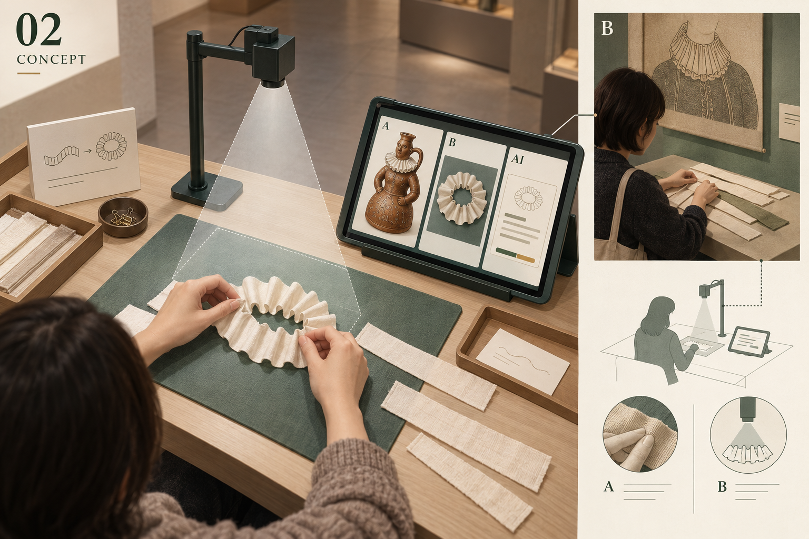
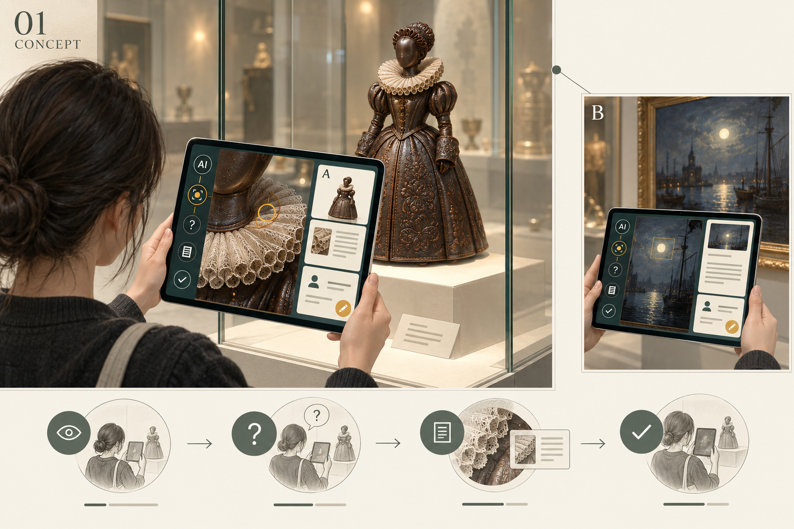
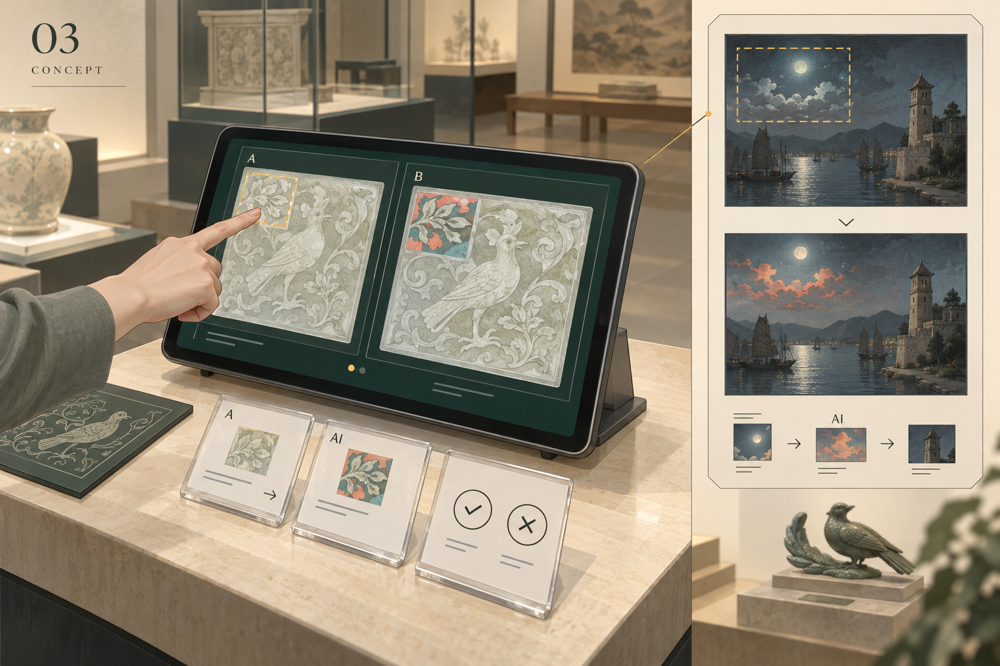
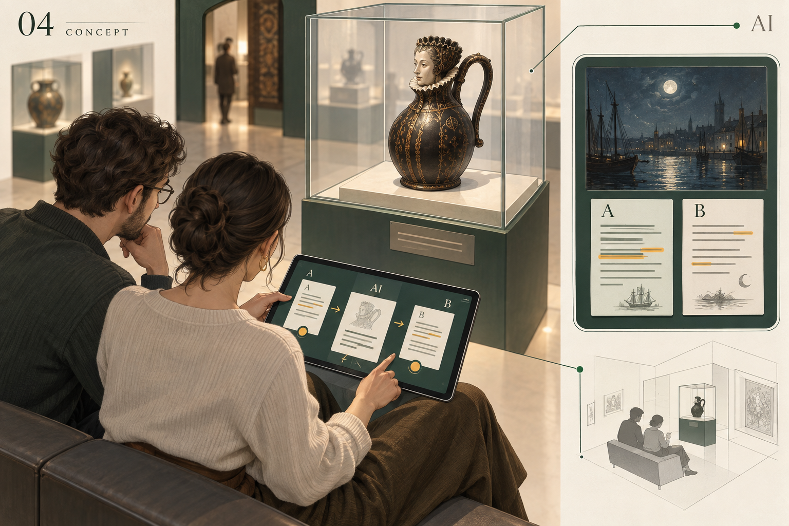
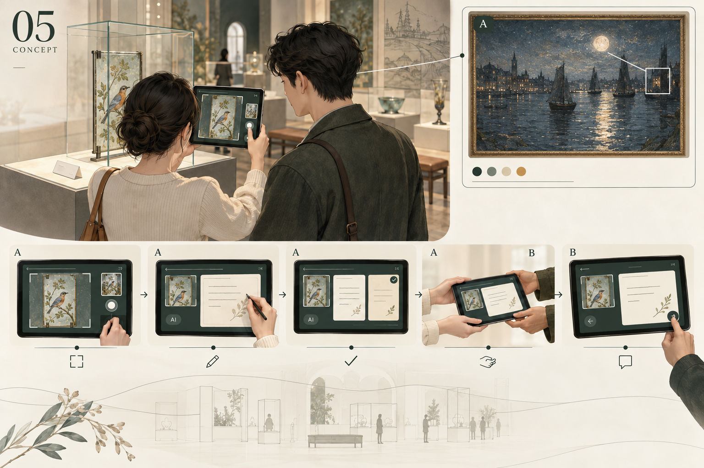

How does interacting with AI shape visitors’ experiences of authenticity in museums and heritage sites?
We explore how visitors describe their connection with objects, history, places and people when they use AI.
Five short activities help us explore what feels authentic to visitors and how their views stay the same or change when they use AI.
Tudor House & Garden · God’s House Tower
About 6–10 minutes per activity · Design proposals

02 / MAKE A SHAPE · AI DESIGN SKETCHThese five probes help us explore how visitors experience authenticity when AI is part of a museum visit. We want to understand what that experience is based on and how it stays the same or changes during an activity.
A probe is a short activity that gives visitors something to try, respond to and talk about. Here, visitors look, make, change, write or share, then explain their own view after one AI response.
Here, authenticity means a visitor’s sense of a real or meaningful connection with an object, its history, the place or other people. We ask visitors what feels authentic to them and why.
We explore how visitors describe their connection with objects, history, places and people when they use AI.
We look at the details, facts, memories, feelings and relationships they point to.
We follow what visitors accept, question, change or leave open, and ask why.
What does the visitor notice, think or feel?
What does AI explain, compare, change or write?
What does the visitor keep, change or question, and why?

Choose a detail, ask AI about it, then write what you think.
6–8 minutes · Optional camera: a detailMake a shape with cloth or paper, photograph it, and tell AI what it missed about making it.
8–10 minutes · Camera: your made shape
Ask AI to change one detail in an object photo, then decide whether the result still feels connected to the object.
7–10 minutes · No camera needed
Write one line each about an object, let AI combine them, then decide what the shared label should say.
8–10 minutes · No camera needed
Choose an object detail for a friend, let AI help word your message, then see how your friend responds.
6–8 minutes · Optional camera: a detailStart with Ask About a Detail for a simple first build. Add Make a Shape to study camera use and touch. Use Write a Label Together or Share a Detail to study two voices and a personal connection.
Try one or two probes first. These are practical choices, not a ranking of effects. Visitors do not need to complete all five.
Textiles come first where the records support them. Everyone Involved is the preferred GHT textile candidate. No Chinese textile at either target venue was verified in the public records checked. A British–Chinese pair remains unconfirmed; objects from other museums have not been substituted.
See objects and the search result →Choose a detail, ask AI about it, then write what you think.
What I see, what the museum records and what AI says may differ.
Record the evidence a visitor starts with, then the reasons for keeping or changing a view.
What do visitors rely on for a sense of authenticity during a museum or heritage visit that involves AI?
How do visitors keep or change their understanding of authenticity as they interact with AI?
Choose a point on the object photo and write one question. Record your first view before seeing AI.
AI: No AI yet.
Read a short answer and open its source if you wish. Keep the chosen detail on screen.
AI: Use the photo, question and fixed museum fact card; say when the card does not answer the question.
Keep your first view, change it, or leave the question open; add a reason in your own words.
AI: No further call.
Static screen sketches. Examples are written for this design, not measured AI outputs or participant data. See the venue tasks below for the object-specific changes.
Two versions of the same activity. The GHT option is a past exhibition candidate, not a confirmed GHT-owned or currently displayed object.
A jug shaped like a dressed figure
Official collection highlight
Image unavailable. Open the source link below to view the original.
The museum describes a leather jug shaped like an Elizabethan woman. Its skirt has raised patterns; some leather types remain uncertain.
This is leather, not a textile. Neither the figure’s identity nor a British place of manufacture is established here. Confirm its record number and image use with the museum.
Open venue record ↗The collar or raised skirt pattern.
Ask about the gap between the clothing-like form and the leather material.
What do you use to decide what this detail means?
Limit: A photo cannot establish a leather type, date or maker’s intention.
Ian Giles
Shown at GHT in 2024; ownership not confirmed at GHT
Image unavailable. Open the source link below to view the original.
The 2024 exhibition included fabric wall hangings. The venue announced a later move of the work to Southampton City Art Gallery.
Preferred textile option. Choose one hanging with the venue and artist. Past display does not establish GHT ownership or current access. A confirmed Chinese textile remains an open gap.
Open venue record ↗One fabric edge or painted detail on one agreed wall hanging.
Ask about what can be seen, then compare the reply with a checked record for that hanging.
Do the material and its known story lead you to the same view?
Limit: Use an approved digital image unless current access is confirmed; do not invent the fabric’s earlier owner.
A fact card is a short list of information checked by the venue.
Use the approved object photo by default. If the object is on display and photography is allowed, take one rear-camera photo, confirm the object, then crop a detail. Use a fixed fact card, not automatic object recognition. Return to the approved photo if the shot is blurred or reflects light.
The proposed system sends only confirmed input. Record the input mode, failures and any help given. The atlas itself does not open a camera, call AI or collect visitor data.
object photo, selected detail, visitor question and checked fact card.
one answer of up to 60 words, a source reference and any uncertainty. Do not invent the maker’s thoughts.
Detail, question, AI answer with source, final note and reason.

Image unavailable. Open the source link below to view the original.
Look Closer supports close looking through AR; Talk to the Art answers visitor questions using museum material. AR alone is not AI that creates text or images.
Open official case ↗Borrow close looking and source-based questions. A visitor-confirmed snapshot and a final personal note are additions in this proposal.
This case supports the interaction idea. It does not show that either target venue uses this probe or that AI improves authenticity.
| Record | What it can show | What it cannot show alone |
|---|---|---|
| Starting choice and own words | What the visitor draws on before AI | A selected detail alone does not explain authenticity. |
| Actual AI input and output | What the visitor is responding to | Reading or accepting output does not prove trust or connection. |
| Final choice, revisions and stated reasons | What stays, changes or remains open | Liking, accuracy and time spent are not measures of authenticity on their own. |
Follow one chosen detail from first view to AI answer to final view. Group the reasons given before asking whether the visitor describes a changed link to the object or its past.
Follow-up question: What, if anything, made you feel closer to or further from this object? What led you to that view?
Limit: A factual mistake may turn the activity into error correction. Mark this separately from a change in felt connection.
A photo viewer, point selection, one sourced AI answer and a saved final note.
6–8 minutes overall. Allow about 1 minute to introduce the task, 2–4 minutes before AI, 1–2 minutes to review its reply and 2–3 minutes to respond. Adjust these parts in a trial to fit the overall task.
Estimates, not measured times. Consent and set-up are extra. Recheck timing for the GHT version.
Start with what the visitor notices. Do not suggest that AI should be trusted or rejected. Read back any words recorded on a visitor’s behalf. Let people skip a reason, keep different views or stop.
Can people choose a clear detail? Does AI preserve source uncertainty? Can a person who keeps their first view explain why?
Make a shape with cloth or paper, photograph it, and tell AI what it missed about making it.
What a camera sees may differ from what the hands feel.
Record how touch and making support a connection, then how the visitor corrects AI’s account.
What do visitors rely on for a sense of authenticity during a museum or heritage visit that involves AI?
How do visitors keep or change their understanding of authenticity as they interact with AI?
Fold ordinary cloth or paper into a shape inspired by the jug’s collar. Note how it feels to make it.
AI: No AI yet.
Take one tabletop photo, check the crop and send it with your note. Read one comparison with the object detail.
AI: Compare visible shapes and quote the visitor’s own account of touch. Do not claim to feel the material.
Mark one useful point and one thing the comparison missed; explain whether making changed your link to the object.
AI: No further call.
Static screen sketches. Examples are written for this design, not measured AI outputs or participant data. See the venue tasks below for the object-specific changes.
Two versions of the same activity. The GHT option is a past exhibition candidate, not a confirmed GHT-owned or currently displayed object.
A jug shaped like a dressed figure
Official collection highlightImage unavailable. Open the source link below to view the original.
The museum describes a leather jug shaped like an Elizabethan woman. Its skirt has raised patterns; some leather types remain uncertain.
This is leather, not a textile. Neither the figure’s identity nor a British place of manufacture is established here. Confirm its record number and image use with the museum.
Open venue record ↗The collar’s folds, viewed in an approved detail photo.
Make a loose shape using paper or ordinary cloth, then compare its form with the jug.
What did making reveal that looking alone did not?
Limit: This is a response to a leather form, not a textile replica or a test of historic craft skill.
Ian Giles
Shown at GHT in 2024; ownership not confirmed at GHTImage unavailable. Open the source link below to view the original.
The 2024 exhibition included fabric wall hangings. The venue announced a later move of the work to Southampton City Art Gallery.
Preferred textile option. Choose one hanging with the venue and artist. Past display does not establish GHT ownership or current access. A confirmed Chinese textile remains an open gap.
Open venue record ↗The shapes made by fabric edges in one agreed wall hanging.
Arrange or fold loose cloth into a new shape inspired by the detail; photograph it and describe its feel.
Which part of the experience was missing from AI’s visual comparison?
Limit: Use modern loose cloth, without tracing archive cartoons; do not claim the making repeats the artist’s process.
A fact card is a short list of information checked by the venue.
Use a tablet or an overhead camera aimed at the work surface. Photograph only the visitor’s made shape. Preview, crop and confirm before sending one image. No continuous filming or body tracking is needed. If the camera fails, record that session as a text-only variant.
The proposed system sends only confirmed input. Record the input mode, failures and any help given. The atlas itself does not open a camera, call AI or collect visitor data.
photo of the made shape, reference detail, visitor’s touch note and fact card.
up to 60 words comparing visible form and noting what the photo cannot show.
Made shape, photo, touch note, AI comparison and visitor correction.

Image unavailable. Open the source link below to view the original.
Art Morph uses a camera to turn arrangements of everyday materials into AI images.
Open official case ↗Borrow the link between physical making and camera input. Here AI compares once instead of producing a live stream, and the visitor explains what touch adds.
This case supports the interaction idea. It does not show that either target venue uses this probe or that AI improves authenticity.
| Record | What it can show | What it cannot show alone |
|---|---|---|
| Starting choice and own words | What the visitor draws on before AI | A selected detail alone does not explain authenticity. |
| Actual AI input and output | What the visitor is responding to | Reading or accepting output does not prove trust or connection. |
| Final choice, revisions and stated reasons | What stays, changes or remains open | Liking, accuracy and time spent are not measures of authenticity on their own. |
Follow one making session. Compare what the visitor says about touch before AI with what they add or correct after AI. Keep visible similarity separate from felt connection.
Follow-up question: What did your hands tell you that the picture did not? Did that affect your connection with the object?
Limit: Cloth and paper do not reproduce the historic object’s material or the artist’s process. Skill and comfort with making may shape the response.
A photo preview and crop, one image-and-text request, and editable notes.
8–10 minutes overall. Allow about 1 minute to introduce the task, 2–4 minutes before AI, 1–2 minutes to review its reply and 2–3 minutes to respond. Adjust these parts in a trial to fit the overall task.
Estimates, not measured times. Consent and set-up are extra. Recheck timing for the GHT version.
Start with what the visitor notices. Do not suggest that AI should be trusted or rejected. Read back any words recorded on a visitor’s behalf. Let people skip a reason, keep different views or stop.
Can the camera capture folds clearly? Do people describe touch before reading AI? Is there time to correct the comparison?
Ask AI to change one detail in an object photo, then decide whether the result still feels connected to the object.
A pleasing new image may weaken its link to the historical object.
Record which features matter, then how the visitor keeps or changes a boundary after the edit.
What do visitors rely on for a sense of authenticity during a museum or heritage visit that involves AI?
How do visitors keep or change their understanding of authenticity as they interact with AI?
On a digital photo, mark one small area to change and name something that must stay.
AI: No AI yet.
View the original next to one AI edit. The original remains clearly labelled and available.
AI: Generate within the marked area; the app restores all pixels outside it from the original.
Keep, reject or set aside the edit; say what still links it to the object and what has changed.
AI: No further call.
Static screen sketches. Examples are written for this design, not measured AI outputs or participant data. See the venue tasks below for the object-specific changes.
Two versions of the same activity. The GHT option is a past exhibition candidate, not a confirmed GHT-owned or currently displayed object.
Decorated glass from the museum stores
Official collection highlight
Image unavailable. Open the source link below to view the original.
The museum suggests these bird-decorated panes may have come from the old Banqueting Hall windows.
That origin is a suggestion, not a confirmed fact. Select one pane and confirm its record number. Glass is not a textile.
Open venue record ↗One small area of a single bird-decorated pane.
Change one colour while keeping the bird’s outline and the rest of the image fixed.
When does this become your new image rather than an account of the old object?
Limit: The new image is not a restoration. Confirm image editing rights before implementation.
Abraham Pether
Past loan exhibition; not owned by GHT
Image unavailable. Open the source link below to view the original.
GHT records a Pether family loan display in 2019–2020. An opening report names this painting; its image record names Hampshire County Council as the collection.
Record FA1991.28 needs confirmation with the owner. Current display and image access are unconfirmed. The Art UK record itself could not be opened; see the linked image record and report.
Open venue record ↗Image, title and record number: Commons / Art UK ↗
2019 opening report naming this painting ↗
A small patch of sky or water in the Pether painting.
Ask for one change while keeping the tower and all unmarked areas fixed.
What must stay for the picture to keep its link to this place?
Limit: Historical loan candidate; current access is unconfirmed. A painting is not a record of exactly how the site looked.
A fact card is a short list of information checked by the venue.
Use an approved high-quality object image. A live camera would add changing light and angle without helping the question about local edits.
The proposed system sends only confirmed input. Record the input mode, failures and any help given. The atlas itself does not open a camera, call AI or collect visitor data.
the object photo, the marked area, a change request and a rule for what must stay.
one new image, clearly labelled as an AI edit. Keep the original image outside the marked area.
Original, mask, prompt, AI edit, decision to keep or reject the image and reason.

Image unavailable. Open the source link below to view the original.
Extend the Art lets visitors use AI to extend an image beyond its frame.
Open official case ↗Borrow a visible change to an art image. Here the visitor marks a small area inside the image and states what must stay.
This case supports the interaction idea. It does not show that either target venue uses this probe or that AI improves authenticity.
| Record | What it can show | What it cannot show alone |
|---|---|---|
| Starting choice and own words | What the visitor draws on before AI | A selected detail alone does not explain authenticity. |
| Actual AI input and output | What the visitor is responding to | Reading or accepting output does not prove trust or connection. |
| Final choice, revisions and stated reasons | What stays, changes or remains open | Liking, accuracy and time spent are not measures of authenticity on their own. |
Follow one edit decision. Compare the initial keep rule with the visitor’s final boundary between a historical object and a personal image. Include unchanged or uncertain views.
Follow-up question: Which part must stay for this image to keep a meaningful link to the object, and why?
Limit: Image quality and AI failure can affect a decision. Rejecting a poor image does not by itself reveal a view of authenticity.
A tool for marking the area to change, one image-edit request, keeping the original image outside the marked area and side-by-side views.
7–10 minutes overall. Allow about 1 minute to introduce the task, 2–4 minutes before AI, 1–2 minutes to review its reply and 2–3 minutes to respond. Adjust these parts in a trial to fit the overall task.
Estimates, not measured times. Consent and set-up are extra. Recheck timing for the GHT version.
Start with what the visitor notices. Do not suggest that AI should be trusted or rejected. Read back any words recorded on a visitor’s behalf. Let people skip a reason, keep different views or stop.
Does the edit stay within the marked area? Are all outside pixels unchanged? Do visitors distinguish the original object photo from the new image?
Write one line each about an object, let AI combine them, then decide what the shared label should say.
One smooth label may hide two different views.
Record each person’s starting meaning, then how both respond to the shared wording.
What do visitors rely on for a sense of authenticity during a museum or heritage visit that involves AI?
How do visitors keep or change their understanding of authenticity as they interact with AI?
Each person writes one line before seeing the other person’s words. Then reveal both.
AI: No AI yet.
Read one short AI label next to both original lines and the museum fact card.
AI: Combine the two views without adding history or turning one person’s view into a fact.
Each person marks words to keep or change; edit the label together or leave two different labels.
AI: No further call; final changes are made by people.
Static screen sketches. Examples are written for this design, not measured AI outputs or participant data. See the venue tasks below for the object-specific changes.
Two versions of the same activity. The GHT option is a past exhibition candidate, not a confirmed GHT-owned or currently displayed object.
A jug shaped like a dressed figure
Official collection highlightImage unavailable. Open the source link below to view the original.
The museum describes a leather jug shaped like an Elizabethan woman. Its skirt has raised patterns; some leather types remain uncertain.
This is leather, not a textile. Neither the figure’s identity nor a British place of manufacture is established here. Confirm its record number and image use with the museum.
Open venue record ↗The whole jug, with its collar and skirt visible.
Each visitor writes a line; compare both with the shared AI label.
Did the shared words keep what mattered to each of you?
Limit: Personal readings should remain distinct from sourced information about the object.
Ian Giles
Shown at GHT in 2024; ownership not confirmed at GHTImage unavailable. Open the source link below to view the original.
The 2024 exhibition included fabric wall hangings. The venue announced a later move of the work to Southampton City Art Gallery.
Preferred textile option. Choose one hanging with the venue and artist. Past display does not establish GHT ownership or current access. A confirmed Chinese textile remains an open gap.
Open venue record ↗The same agreed wall hanging for both visitors.
Each visitor writes about one visible feature or its documented context; then review the shared label.
Did AI keep your different connections to the work?
Limit: Do not ask visitors to disclose identities or treat them as speaking for a community.
A fact card is a short list of information checked by the venue.
Use the same approved object photo for both people. Text and discussion provide the evidence; a camera is not needed.
The proposed system sends only confirmed input. Record the input mode, failures and any help given. The atlas itself does not open a camera, call AI or collect visitor data.
two separate visitor lines and a checked fact card.
one label of up to 60 words. Preserve different views and avoid invented agreement. People make all later edits.
Two first lines, AI draft, each person’s edits and final label or two labels.

Image unavailable. Open the source link below to view the original.
The museum used AI in exhibition planning and text writing. This was a curatorial project, not a two-visitor label activity.
Open official case ↗Borrow a draft that people can review. Move the task to two visitors and preserve their separate words and disagreement.
This case supports the interaction idea. It does not show that either target venue uses this probe or that AI improves authenticity.
| Record | What it can show | What it cannot show alone |
|---|---|---|
| Starting choice and own words | What the visitor draws on before AI | A selected detail alone does not explain authenticity. |
| Actual AI input and output | What the visitor is responding to | Reading or accepting output does not prove trust or connection. |
| Final choice, revisions and stated reasons | What stays, changes or remains open | Liking, accuracy and time spent are not measures of authenticity on their own. |
Use the pair’s discussion as the unit. Follow the words from each first line through the AI draft and final choice; connect any loss or change of voice to the participants’ reasons.
Follow-up question: Which words still feel like yours? Does sharing this label change your connection with the object?
Limit: Agreement may reflect politeness or one person taking charge. Keep both people’s separate texts and choices.
Two separate text fields, one AI draft, a shared text editor and separate choices.
8–10 minutes overall. Allow about 1 minute to introduce the task, 2–4 minutes before AI, 1–2 minutes to review its reply and 2–3 minutes to respond. Adjust these parts in a trial to fit the overall task.
Estimates, not measured times. Consent and set-up are extra. Recheck timing for the GHT version.
Start with what the visitor notices. Do not suggest that AI should be trusted or rejected. Read back any words recorded on a visitor’s behalf. Let people skip a reason, keep different views or stop.
Can each person write privately first? Are both voices visible? Can they keep two views without feeling they failed?
Choose an object detail for a friend, let AI help word your message, then see how your friend responds.
Clearer wording may lose the sender’s own voice.
Record the sender’s personal link, then how AI wording and the recipient’s reply affect it.
What do visitors rely on for a sense of authenticity during a museum or heritage visit that involves AI?
How do visitors keep or change their understanding of authenticity as they interact with AI?
Choose a detail and write why this person came to mind. Keep the first message.
AI: No AI yet.
Read one AI rewrite. Use it, edit it yourself, or keep your own message. Pass the tablet to your friend.
AI: Rewrite the message in up to 40 words; invent no shared memory or object history.
The friend sees the detail and message, responds, then both compare the first message, AI draft and chosen version.
AI: No further call.
Static screen sketches. Examples are written for this design, not measured AI outputs or participant data. See the venue tasks below for the object-specific changes.
Two versions of the same activity. The GHT option is a past exhibition candidate, not a confirmed GHT-owned or currently displayed object.
Decorated glass from the museum stores
Official collection highlightImage unavailable. Open the source link below to view the original.
The museum suggests these bird-decorated panes may have come from the old Banqueting Hall windows.
That origin is a suggestion, not a confirmed fact. Select one pane and confirm its record number. Glass is not a textile.
Open venue record ↗One bird or small painted detail on a selected pane.
Choose it for a companion, write a message and compare the recipient’s reply with the intended meaning.
Was the connection in the object, your words or your shared memory?
Limit: A personal memory is the visitor’s account, not evidence about the glass.
Ian Giles
Shown at GHT in 2024; ownership not confirmed at GHTImage unavailable. Open the source link below to view the original.
The 2024 exhibition included fabric wall hangings. The venue announced a later move of the work to Southampton City Art Gallery.
Preferred textile option. Choose one hanging with the venue and artist. Past display does not establish GHT ownership or current access. A confirmed Chinese textile remains an open gap.
Open venue record ↗One colour, fabric edge or painted detail from the agreed wall hanging.
Choose a detail for someone you know; keep the original message beside the AI rewrite.
Did the rewritten words still sound like the sender?
Limit: No invented memory or personal identity; an approved digital image is the default.
A fact card is a short list of information checked by the venue.
Use an approved photo, or take one rear-camera photo where allowed. The chosen image can stay on the device while only the message text goes to AI. Pass the tablet; no email, social account or external sending is required.
The proposed system sends only confirmed input. Record the input mode, failures and any help given. The atlas itself does not open a camera, call AI or collect visitor data.
the sender’s words and, only if needed, a checked fact card.
one viewing invitation of up to 40 words. Do not invent memories, feelings or historical claims.
Selected detail, first message, AI draft, chosen message and reply.

Image unavailable. Open the source link below to view the original.
GIFT invites visitors to choose museum objects and create personal gifts using photos and voice messages. It is not a AI that creates text or images project.
Open official case ↗Borrow choosing an object for another person. Add one optional AI rewrite and compare the sender’s meaning with the recipient’s response.
This case supports the interaction idea. It does not show that either target venue uses this probe or that AI improves authenticity.
| Record | What it can show | What it cannot show alone |
|---|---|---|
| Starting choice and own words | What the visitor draws on before AI | A selected detail alone does not explain authenticity. |
| Actual AI input and output | What the visitor is responding to | Reading or accepting output does not prove trust or connection. |
| Final choice, revisions and stated reasons | What stays, changes or remains open | Liking, accuracy and time spent are not measures of authenticity on their own. |
Follow one exchange from sender’s intention to recipient’s reply. Compare the three text versions and both accounts; do not assume that accepting AI means the message felt authentic.
Follow-up question: What reached the recipient, and what changed along the way? Where did the personal connection come from?
Limit: The relationship between the pair may matter more than the AI rewrite. Record it broadly without collecting private details.
A detail picker, three saved text versions and a hand-over screen for the reply.
6–8 minutes overall. Allow about 1 minute to introduce the task, 2–4 minutes before AI, 1–2 minutes to review its reply and 2–3 minutes to respond. Adjust these parts in a trial to fit the overall task.
Estimates, not measured times. Consent and set-up are extra. Recheck timing for the GHT version.
Start with what the visitor notices. Do not suggest that AI should be trusted or rejected. Read back any words recorded on a visitor’s behalf. Let people skip a reason, keep different views or stop.
Does the sender have a real choice of wording? Can the recipient reply before comparing versions? Is the shared device cleared afterwards?
These five probes help us explore how visitors experience authenticity when AI is part of a museum visit. We want to understand what that experience is based on and how it stays the same or changes during an activity.
Here, authenticity means a visitor’s sense of a real or meaningful connection with an object, its history, the place or other people. We ask visitors what feels authentic to them and why.
We explore how visitors describe their connection with objects, history, places and people when they use AI.
We look at the details, facts, memories, feelings and relationships they point to.
We follow what visitors accept, question, change or leave open, and ask why.
Ask what the visitor notices and what supports their sense of connection. Let them explain what authenticity means to them. Keep examples of uncertainty, disagreement and no change, as well as examples of a changed view.
What do you notice?
Why does it matter to you?
What did it say or change?
What information did it use?
What do you keep, change or leave open?
Why?
| Probe | Its question | Connection to the research questions |
|---|---|---|
| Ask About a Detail | What makes a visitor keep or change a view after AI explains an object detail? | Record the evidence a visitor starts with, then the reasons for keeping or changing a view. |
| Make a Shape | How does the feel of making something affect a visitor’s response to what AI sees? | Record how touch and making support a connection, then how the visitor corrects AI’s account. |
| Change One Detail | Where does a visitor draw the line between a link to the past and a new personal work? | Record which features matter, then how the visitor keeps or changes a boundary after the edit. |
| Write a Label Together | Whose words and meanings survive when AI brings two views together? | Record each person’s starting meaning, then how both respond to the shared wording. |
| Share a Detail | Does AI help a personal message keep the connection its sender intended? | Record the sender’s personal link, then how AI wording and the recipient’s reply affect it. |
Confirm the object and fact card with the venue. Try one or two probes over about 6–8 sessions to check clarity, timing and the quality of explanations. This is a planning estimate, not a final sample size.
Ask “Why did you stop here?” before asking about a real connection. Avoid leading questions such as “Does this now feel more authentic?” For pair activities, analyse the shared session while keeping each person’s words visible.
Follow the sequence: first view → actual AI output → visitor’s choice → reason. Compare events within a session before comparing visitors. Keep cases with no change, rejection, uncertainty and failure.
Record the object, venue, original or digital viewing, camera mode, language, broad pair relationship, model errors and researcher help. Different objects do not support a claim that venue or culture caused a difference.
A visitor identifies a feature, a source, a memory or the feel of making, and explains why it matters to their connection. A click, long visit, correct fact or positive rating alone is not enough.
These are exploratory probes. A claim that AI caused a change would need a separate comparison design, such as an activity with the same information and no AI, and a justified sample size.
Record the object and source version, anonymous session ID, actual inputs and outputs, model version, human changes and reasons. Explain photo storage and audio recording separately. Confirm the model service and data handling before collecting material; send only input the visitor has checked.
People can skip a reason, reject a draft, keep different views or stop. Clear the shared device between sessions. This atlas has no active AI, camera access or participant data collection.
Textiles are preferred. The venue relationship must be supported by a source.
Textiles come first where the records support them. Everyone Involved is the preferred GHT textile candidate. No Chinese textile at either target venue was verified in the public records checked. A British–Chinese pair remains unconfirmed; objects from other museums have not been substituted.
Ownership gap: Tudor House has named collection highlights. The GHT records confirm past exhibitions, not GHT ownership. If both objects must belong to the two venues, the GHT object still needs confirmation.
Checked 2 October 2026. This is not proof that the venues have no Chinese textiles. A British setting or clothing style does not establish where an object was made. Read the search record ↗
The fabric hangings appear in probes 01, 02, 04 and 05. Select one component with the venue and artist before a trial. The official photo shows the installation, not an individually catalogued component. The Tudor House jug is made of leather, not cloth.
Ian Giles
Shown at GHT in 2024; ownership not confirmed at GHTImage unavailable. Open the source link below to view the original.
The 2024 exhibition included fabric wall hangings. The venue announced a later move of the work to Southampton City Art Gallery.
Preferred textile option. Choose one hanging with the venue and artist. Past display does not establish GHT ownership or current access. A confirmed Chinese textile remains an open gap.
Open venue record ↗A jug shaped like a dressed figure
Official collection highlightImage unavailable. Open the source link below to view the original.
The museum describes a leather jug shaped like an Elizabethan woman. Its skirt has raised patterns; some leather types remain uncertain.
This is leather, not a textile. Neither the figure’s identity nor a British place of manufacture is established here. Confirm its record number and image use with the museum.
Open venue record ↗Decorated glass from the museum stores
Official collection highlightImage unavailable. Open the source link below to view the original.
The museum suggests these bird-decorated panes may have come from the old Banqueting Hall windows.
That origin is a suggestion, not a confirmed fact. Select one pane and confirm its record number. Glass is not a textile.
Open venue record ↗Abraham Pether
Past loan exhibition; not owned by GHTImage unavailable. Open the source link below to view the original.
GHT records a Pether family loan display in 2019–2020. An opening report names this painting; its image record names Hampshire County Council as the collection.
Record FA1991.28 needs confirmation with the owner. Current display and image access are unconfirmed. The Art UK record itself could not be opened; see the linked image record and report.
Open venue record ↗GHT also documented sarah filmer’s knit the walls, a community knitting project shown there in 2022. It is a local textile alternative, but does not supply a verified Chinese object or establish GHT ownership. GHT exhibition record ↗
The search excluded other museums called Tudor House, city-wide holdings without a target-venue record, workshop props and objects in unrelated museums.
Name, record number, material, origin and owner.
Original on display, stored object or approved digital image?
Photo quality, photography rules and conditions on AI editing.
Checked facts, sources and clearly marked uncertainties.
The museum cases are documented practices. The five activities and their research uses are proposals.
| Probe | Official museum case | What this proposal changes |
|---|---|---|
| Ask About a Detail | Cleveland Museum of Art: Look Closer / Talk to the Art ↗ | Borrow close looking and source-based questions. A visitor-confirmed snapshot and a final personal note are additions in this proposal. |
| Make a Shape | Cleveland Museum of Art: Art Morph ↗ | Borrow the link between physical making and camera input. Here AI compares once instead of producing a live stream, and the visitor explains what touch adds. |
| Change One Detail | Cleveland Museum of Art: Extend the Art ↗ | Borrow a visible change to an art image. Here the visitor marks a small area inside the image and states what must stay. |
| Write a Label Together | Nasher Museum of Art: Act as if you are a curator ↗ | Borrow a draft that people can review. Move the task to two visitors and preserve their separate words and disagreement. |
| Share a Detail | Brighton Museum / Blast Theory: GIFT ↗ | Borrow choosing an object for another person. Add one optional AI rewrite and compare the sender’s meaning with the recipient’s response. |
The five concept images show actions, devices and screen layouts. They are AI-generated sketches, not evidence of collection appearance, a historical setting or a completed system. Original prompts are in image_prompts.json. Current GHT textile tasks take priority over earlier object insets.
Object and case photographs load from source websites and keep their credits. The Pether image uses an Art UK image address checked against its Commons record and an opening report. Third-party photographs are not copied into this repository. If an image fails, its source link remains available.
All example text is written for the design. Timing is estimated. The atlas has no live AI calls, camera capture, visitor records or analytics.